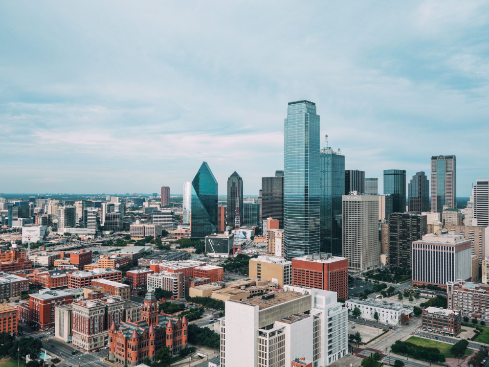
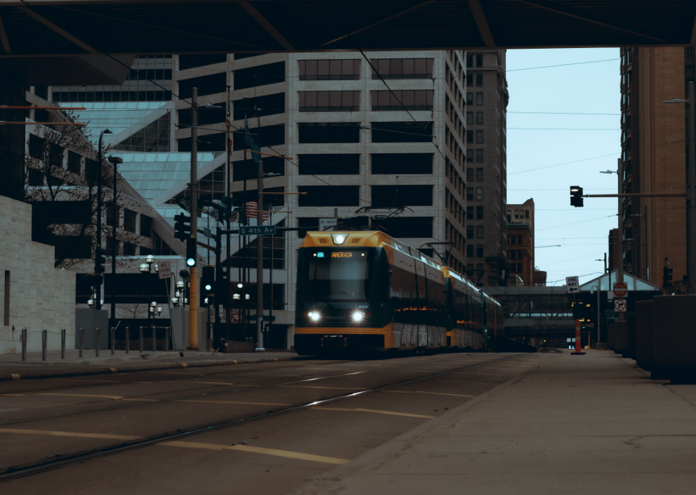
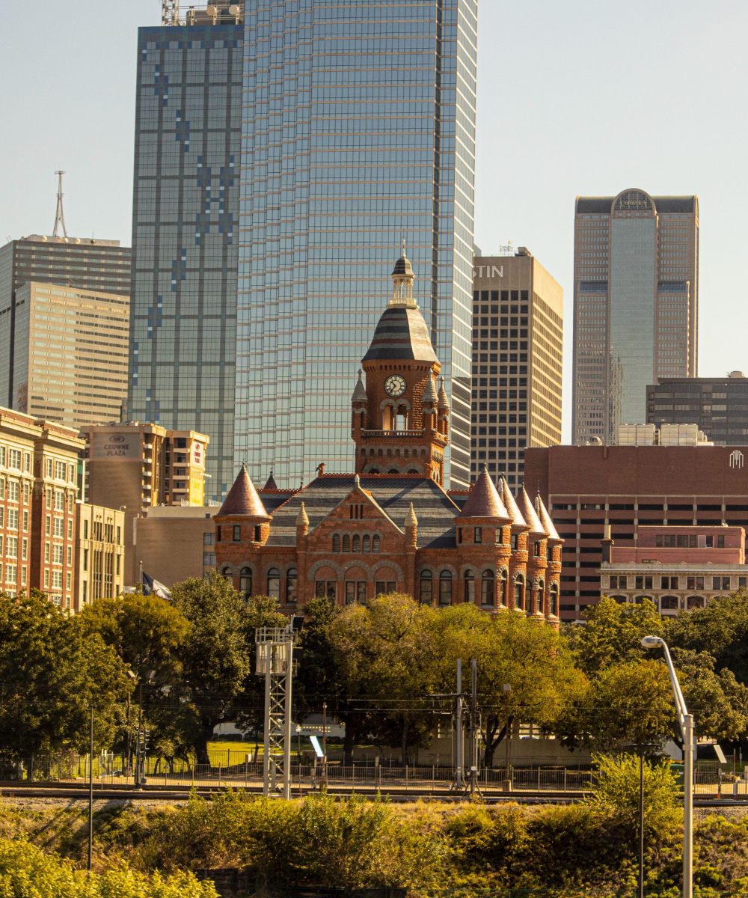

Overview of Dallas

Dallas, located in North Texas, was formally incorporated as a city on February 2, 1856. It is a core city of the Dallas-Fort Worth metropolitan area in North Texas. This metroplex has the largest population of Texas metros, and the fourth largest population of all metros in the entire country. This urban city is a transportation hub that intersects with four major interstate highways and boasts one of the largest, busiest airports in the world. It was originally built around major railroads and flourished due to the easy access those rails provided to cotton, cattle, and oil.
The city of Dallas is so large that it is divided into regions, including Central Dallas, East Dallas, Oak Cliff, and South Dallas. Central Dallas, or Downtown Dallas, is mainly a shopping district packed with restaurants and stores. East Dallas consists of historical neighborhoods such as Deep Ellum, which hosts many art and entertainment venues, and middle-class residential areas. Oak Cliff, which is southwest of Downtown Dallas, was originally it's own city before it was annexed in 1903. It is one of the oldest areas in the city, and thus contains 5 out of 13 conservation districts in Dallas. South Dallas is where the annual Texas State Fair is held.
Dallas faces a lot of extreme weather, specifically tornadoes and hailstorms, due to its location at the bottom of Tornado Alley. Its climate is humid subtropical, which means it has very hot summers with moderate to high humidity, and mostly mild winters. Heat indices often surpass 105 °F in the summer due to the high humidity, and the average daytime temperature in winter is 57 °F. Winters see occassional cold fronts that bring the temperature below 40 °F for multiple days. These northern cold fronts often occur between days with highs above 80 °F. Spring and Autumn consistently remain a pleasant temperature, but both bring severe thunderstorms and the occasional tornado (although Autumn tends to have less intense and less frequent storms).
Like the rest of Texas, Dallas is known for its barbecue. However, it also happens to be an excellent place to find authentic Mexican food as well as Tex-Mex.

Economy
The Dallas-Fort Worth metro area is overrun with the corporate headquarters for publicly traded companies. In fact, it boasts the second-largest number of headquarters in Texas (second to Houston), and the fourth-largest in the entire country. Not only is it a popular homebase for businesses, but it is also the third most popular travel destination for business in the US. The city also has the most shopping centers per capita in America, and its large malls are big tourist attractions.
In March 2026, Dallas had an unemployment rate of 3.9% (for context, 4-5% is generally considered the ideal, healthy amount), and the median household income in 2024 was $70,518. 16.7% of the population lives below the poverty line, which is above the national average of 12.5%. The homeownership rate is also lower than the national average, with only 42.4% of homes being occupied by their owner in Dallas as opposed to the national average of 65.2%. The cost of living in Dallas is slightly below the national average. Renters pay on average $4,700 a month for basic expenses such as groceries, housing, utilities, transportation, and healthcare, and homeowners pay around $8,500 a month. Based on the median household income, most single person households can live relatively comfortably in Dallas as renters. Compared to the state average salary of $55,200 a year ($4,600 a month), Dallas' average salary is $69,802.
Transportation
Personal vehicles are the best way to traverse Dallas, but there is public transit available such as light rail lines, biking paths, a trolley system, and buses. Unfortunately, Dallas was designed around a large number of freeways and tollways, making automobiles the most convenient mode of transport. Though efforts are being made by the city to increase the accessibility of public transportation, it is not feasible for most residents to use it for their daily commute.
Top Job Fields in Dallas
The top five industries in Dallas are information technology, finance and insurance, manufacturing, real estate, and transportation.
| Rank | Job Title | Local Median Salary | National Median Salary |
|---|---|---|---|
| 1 | Box Truck Owner Operator | $113,722 | $114,472 |
| 2 | Nurse Practitioner | $129,441 | $130,295 |
| 3 | PMNHP | $128,206 | $139,486 |
| 4 | Construction | $94,544 | $95,168 |
| 5 | Flight Instructor | $90,699 | $94,620 |
Demographics
In 2024, there was a total number of 533,915 households and 1,307,930 residents in Dallas. Of those 1.3 million people, 28% are White, 23% are Black, 4% are Asian, and 43% are Hispanic. The median age was 33 years old in 2020, and the ratio of women to men was 100:98. Dallas has one of the largest LGBTQ populations in the United State. The average household size was 2.5 people.
Education
The Dallas-Fort Worth metro area has over 40 colleges and universities. This includes colleges within Dallas city limits, and colleges in surrounding areas in Dallas Country. It has many great options for medical and nursing school, several universities dedicated to theology, and a variety of community colleges, private universities, and trade schools.
Local Hotspots
Dallas is a very large city that is packed with unique experiences. There are a great number of places to go shopping, explore the outdoors, eat delicious food, and enjoy a variety of art mediums.

Outdoor Recreation
- Fair Park: Home to the world's largest collection of Art Deco exhibit buildings and the Texas State Fair.
- Reverchon Park: The original "Central Park" of Dallas which features the Iris Bowl, a baseball diamond, tennis courts, and picnic areas.
- Katy Trail: A 3.5 mile of railroad converted into a hiking trail.
- Dallas Zoo: The oldest and largest zoo in Texas, originally opened in 1888.
Good Eats
- Off the Bone: A BBQ restaurant that serves pecan-smoked meats.
- Javier's: A traditional Mexican restaurant that requires a reservation.
- Emporium Pies: A bakery that specializes in pie served with locally produced ice cream.
Entertainment
- The Dallas Museum of Art: Features over 24,000 artworks from across the globe and time.
- The Morton H. Meyerson Symphony Center: One of the worlds greatest orchestra halls.
- The Perot Museum of Nature and Science: A 6-floor natural history and science museum.